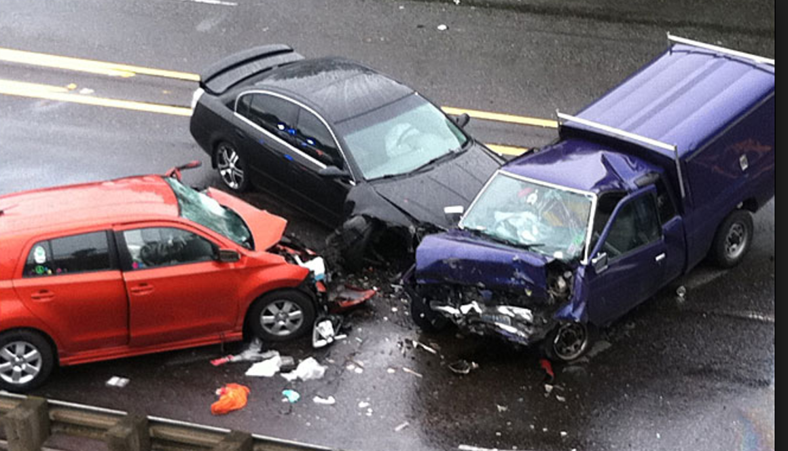

Car crashes are the number one killer in the United States. Driving safety is eternal theme of modern human society. The transportation center of each state would collect crash data and aims to improve the methods of identifying crash locations. However, the most analysis and investigation are only on papers, it is not commom that collect and analyze data from a geographic perspective. The observation through the more interactive map representation would be more productive, realistic, and comprehensive.

This map presents the statewide crashes distributions by counties for the years of 2011 through 2015. A primary objective of this map is to figure out the association between the crashes frequencies and the geographic locations. Crash rate(percentage) is calulated as total number of crashes is divided by the population for each county and various types of crashes causes.According to the ducmentations, the most crashes involves alcohol, drugs, unsafe speeding, motocycle and trucks. So the map present the crash distribution in terms of these five types of factors. The map provides the managers with a good reference to identify the major crash causes and take corresponding measures; for the drivers, they could pay more attention according to the crash rate and causes when they drive in a specific county.
The crash data is collected from "Analysis of Traffic Crash Data in Kentucky (2011–2015)" authored by the Kentucky Transportation Center (KTC). The crash data are stored in the Collision Report Analysis for Safer Highways (CRASH) database. This database is updated daily so the number of crashes in a given calendar year will continue to change for a substantial time after the end of that year.The population data is from US census.
The map is authored by Xi Wang for MAP673, University of Kentucky